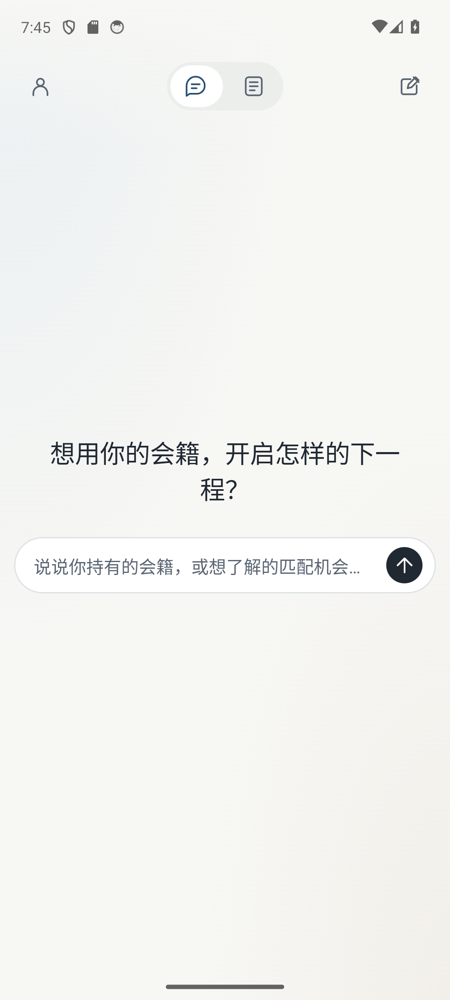
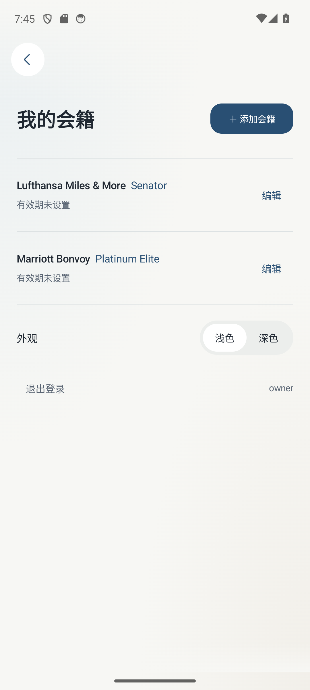
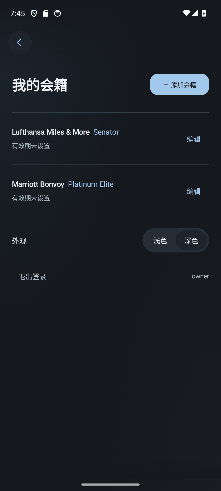
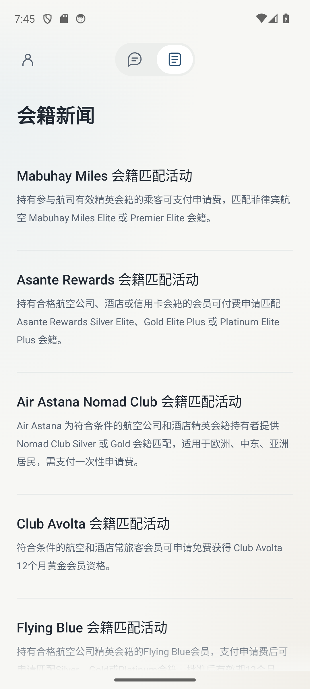
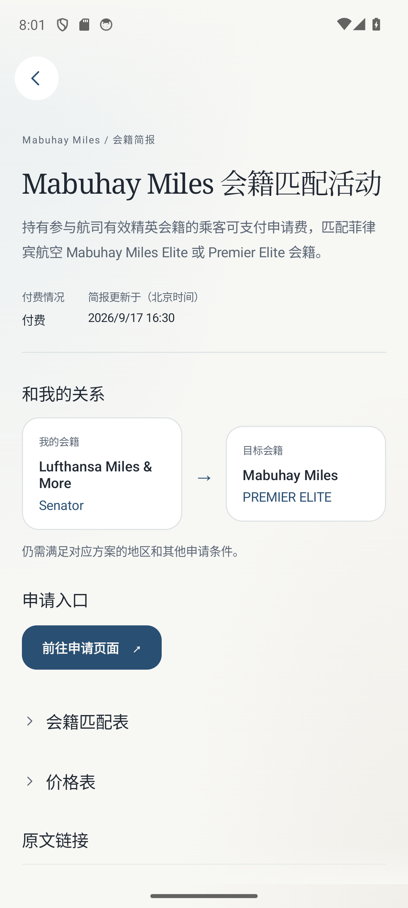
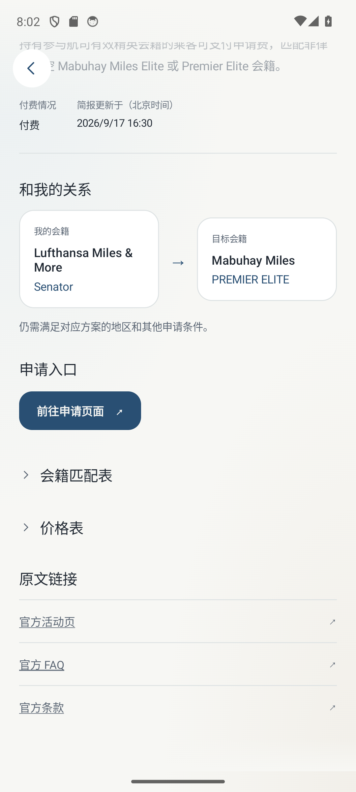
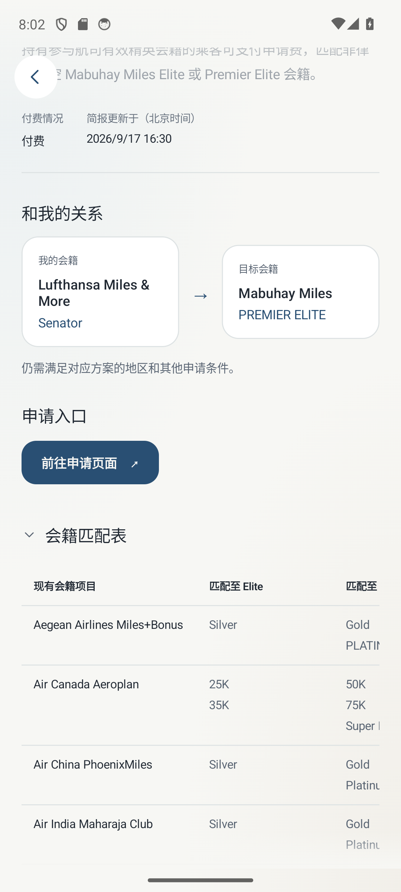
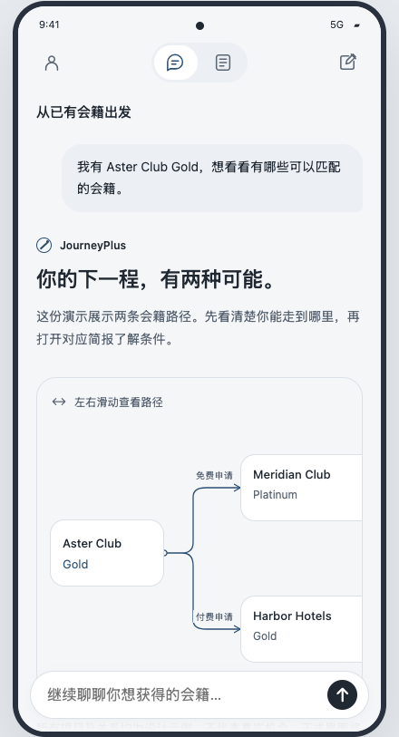
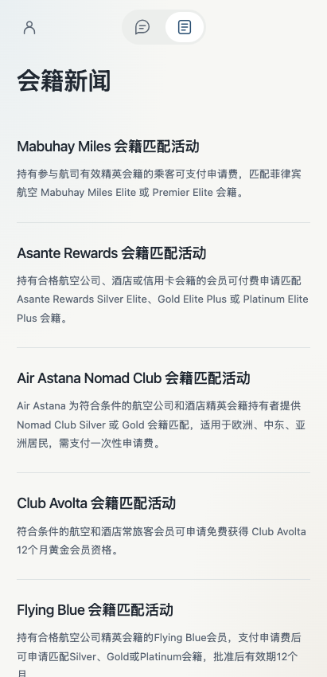
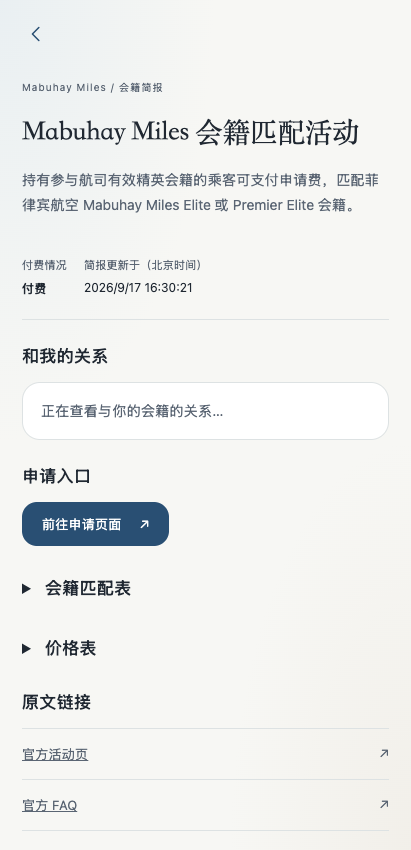

Android · 当前实现截图
原生 Kotlin / Jetpack Compose，已接入本机真实服务。视觉依据当前 Web，手机布局依据 HTML 原型。保留原生状态栏和键盘。
对话首页 · 浅色
我的会籍 · 浅色
我的会籍 · 深色
会籍新闻
简报 · 关系卡片
简报 · 默认折叠
会籍匹配矩阵 · 手动展开
参照页面
HTML · Android 布局基准
当前 Web · 手机宽度新闻
当前 Web · 手机宽度简报
验证：API 34 / Pixel 6，6 项自动化检查通过。Android 和 macOS 系统字体的字形及断行存在差异；截图用于检查实际效果，不代表跨平台逐像素一致。